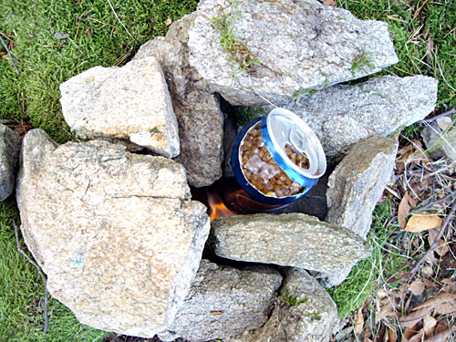

Как приготовить кукурузное лесото с медом в условиях полной Поповицы
Поповице — в полустах километрах от Праги — маленькая деревенька среди прекрасных пейзажей.
Середина ноября, но солнце и теплый ветер позволяют идти в майке. На деревьях еще висят сладкие яблоки, а по краю дороги тянутся кукурузные поля. Они уже убраны, но отдельные початки находятся в большом количестве. Подозреваю, что при наличии мешка, можно обеспечить себя на всю зиму.
Для кукурузного лесото с медом нам понадобятся три початка. И, собственно, лес, где это лесото будет готовиться. С дороги в лес следует уходить в сторону, куда не тянутся электро-провода. Полянку необходимо выбрать засветло, на вершине холма. Чем красивее вид, тем вкуснее будет лесото.
Посмотрим на ингредиенты:
2/3 банки кукурузы.
Сама банка — она послужит нам кастрюлей, за неимением другой.
Старожилы, бородатые кукурузники, предпочитают банки из-под Кока-Колы. Люди помоложе, новое поколение, менее опытное выбирает Пепси. Самый правильный выбор — банки из-под пива, с пивом. Но вокруг — поповице.
Два сладких-сладких яблока, подобранные под забором окрестных домиков.
Кружка
Полторалитровая бутылка воды.
Поскольку место было выбрано вдалеке от водных источников — вода в нашем случае страшный дефецит. Скрипя сердцем используем последнюю резервную бутылку, которая впринципе была предназначена для энергетиков.
Джем и мед.
Оставшиеся после завтрака в Бенешове.
Набор сыров по вкусу.
Единственные продукты купленные заранее. Лесото уникально тем, что обычно кукуруза является гарниром, но здесь она основное блюдо. А на гарнир идут сыры.
Сухой спирт.
Кухонный перочинный нож.
Огниво (может я ошибаюсь в том, как называется кусок железяки и кремня, для высека искр).
Компас — для приготовления он не нужен, просто в связке.
И, конечно же, газета Спорт-Экспресс.
Есть мнение, что Спорт-Экспресс надо добавлять только под килечку и беленькую («под» в данном случае — буквально). Но я считаю, что эта газета прекрасно подходит к любому обеду и ужину.
С ингредиентами разобрались. Чувствуйте себя свободно использовать все, что оказалось под рукой. Я бы не отказался от банки тушенки, шоколада и пива в качестве приправ к лесото.
Приготовление лесото начинается с приготовления очага.
Очистите участок и положите плоский материнский камень.
Приготовьте место для кубика спирта и постройте защиту от ветра.
Две трети банки кукурузных зерен залейте водой до верху.
Теперь, самое время подумать, как мы через это горлышко будем кушать.
Аккуратно, не расплескав драгоценную воду, отрезаем горлышко. Но не до конца — отогнутая часть банки, будет служить ручкой кастрюли.
Если вы порезали палец — воспользуйтесь аптечкой.
Пока кукуруза мокнет, разожгите печь.
При помощи огнива, это не так просто. Спустя 15 минут, у вас должно получится раздуть искры упавшие на смесь спиртовой крошки и сухих молотых листьев.
Надеясь вскипятить воду на одном только спирте — я сжег два кубика. И еще третий, для того чтобы разжечь костер из веток.

Положите кастрюлю в печь и поддерживайте огонь в течении, не засекал сколько, минут.
Сильный ветер, при правильном устройстве печи, создает прекрасный поддув. Главное не забывать подкидывать в огонь новые веточки. Есть подозрение, что кукуруза должна варится на медленном огне, поэтому я избегал сильного пламени, облизывающего кастрюлю со все сторон.
К этому времени уже начинает холодать, и моя рекомендация — тельняшка.
Старайтесь содержать кухню в чистоте. Неутилизируемый мусор складывайте в рюкзак. Ссаки и каки — не менее, чем в пятидесяти шагах. Если начнет капать дождь — уберите газету. Она быстро намокнет и вы потеряете скатерть.
Пока кукуруза стоит на огне, самое время подумать о ложке.
Вам понадобится нож и две ровные веточки, без сучков.
Постарайтесь найти крепкие зеленые ветки. Ножом очистите концы и придайте им вид «китайских палочек»
Рекомендую настругать палочки длиннее, чем показанные на фотографии. Я собирался маркером расписать их иероглифами, но забыл.
Когда вода начинает выкипать — снимите пробу. Если кукуруза еще слишком твердая — добавьте воды. Но помните, что она драгоценна в нашей ситуации. А утром еще чистить зубы, как минимум. И чай.
ВНИМАНИЕ! POZOR! Перемешивая кукурузу, будьте внимательны к кукурузинкам падающим в огонь. Неожиданный попкорн — это вам не шутки.
Не кидайте в костер сухие листья. Они дадут дымовой столб, а в Чехии стоит опасаться Йожина из болот. Он может заметить привал, подойти к вам ночью и сделать что-нибудь плохое. По той же причине, постарайтесь максимально скрыть огонь печи в ночное время. Нагретые камни помогут вам в обустройтсве уюного ноябрьского ночлега.
Кукуруза готовится достаточно долгое время. До темна рекомендуется обустроить ночлег — найти укрытие от ветра, накидать сухих листьев в подстилку. Поставить расстяжки по всему радиусу лагеря.
Со мной по соседству жила семья оленей. Опасаясь этих диких зверей я обвел ниткой круг, примерно 10 метров в диаметре. К концам лески привесил металические гайки и кружку, чтобы не проспать появление внезапных гостей. Олени не воруют рюкзаки с ноутбуками, но всегда могут появится люди — помните об этом во сне.
Когда вся вода выкипела, и вы удовлетворены мягкостью кукурузы, вскройте мед. Добавьте его в банку, перемешайте и оставте настояться.
Имровизированный стол можно сделать из плоских камней. При желании можно украсить ужин цветами, вырезанными из веток скульптурами, навесом от дождя из палок и дождевика — но у меня не было на все это желания.

Спустя пару минут кукурузное лесото с медом готово. Если у вас в фотоаппарате все еще держит батарея, то постарайтесь запечатлеть нарезку сыра, яблок и приготовление салата.
Чтобы не есть из закоптившейся банки, используйте кружку.
В целом, кукуруза вышла жесткой и недовареной. Тем не менее голод она удалила, счастья добавила, да и вообще. Приятного вам аппетита!